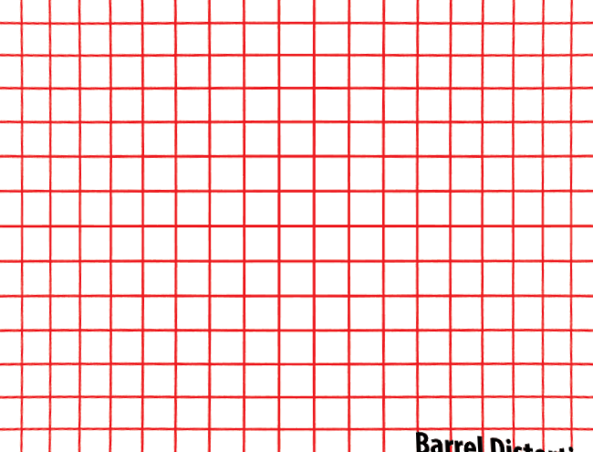
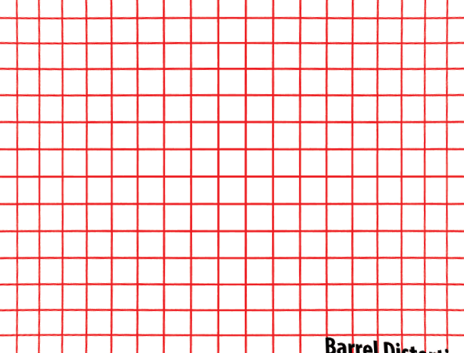

Lens distortion removal
FisheyeGL is an open source tool by Public Lab for removing lens distortion from photographs, from a WebGL enabled browser. Read more
 

a: , b: , Fx: , Fy: , scale: , x: , y:
Drag a new image from your desktop onto the old one to run the correction on a new image. Right-click image to download.
Use the sliders to adjust the correction.
- Fx
- Fy
- a
- b
- scale
- fov x
- fov y
Presets
If you find the right settings for a particular camera or lens, send them in or email jeff@publiclab.org to get them added to a list of presets for a future "auto-correct" feature.
- Mobius Action Cam (default lens): preset
- GoPro alternatives: preset (many almost identical)
Previous images
Drag a new image above and the current image will be saved here. Click (or right-click) to open or download.
Questions
Ask and answer questions to peer-troubleshoot this system: